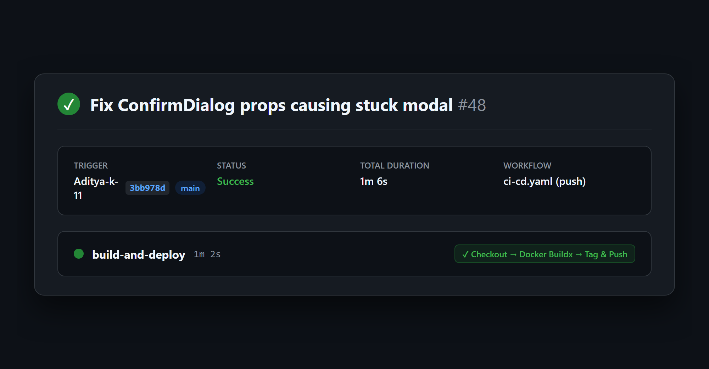
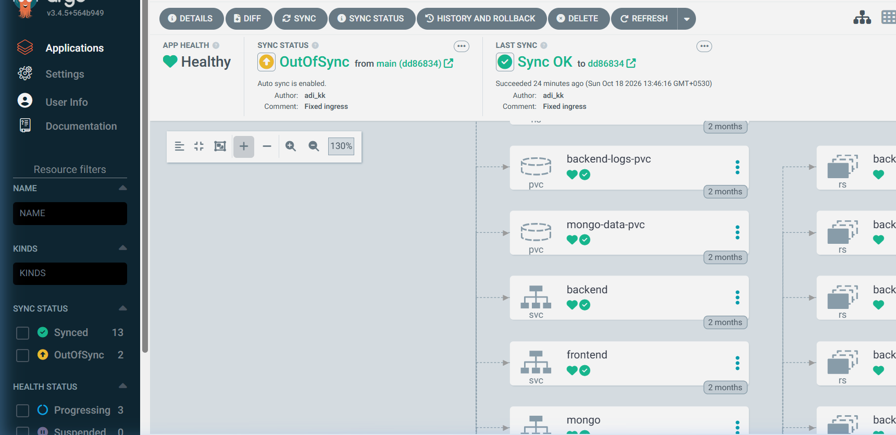
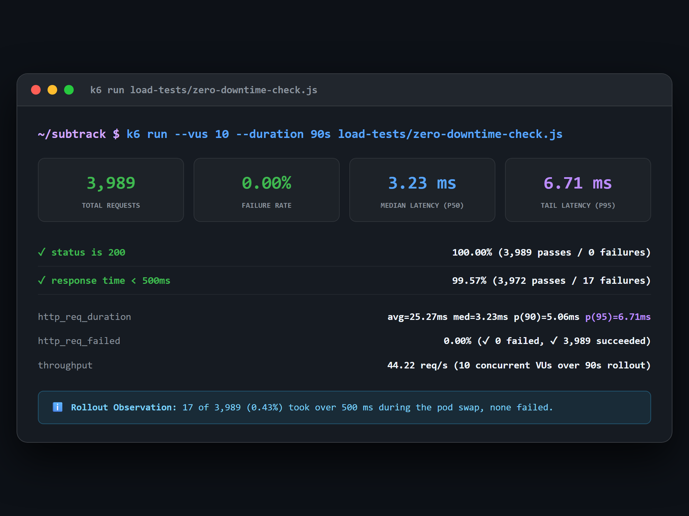
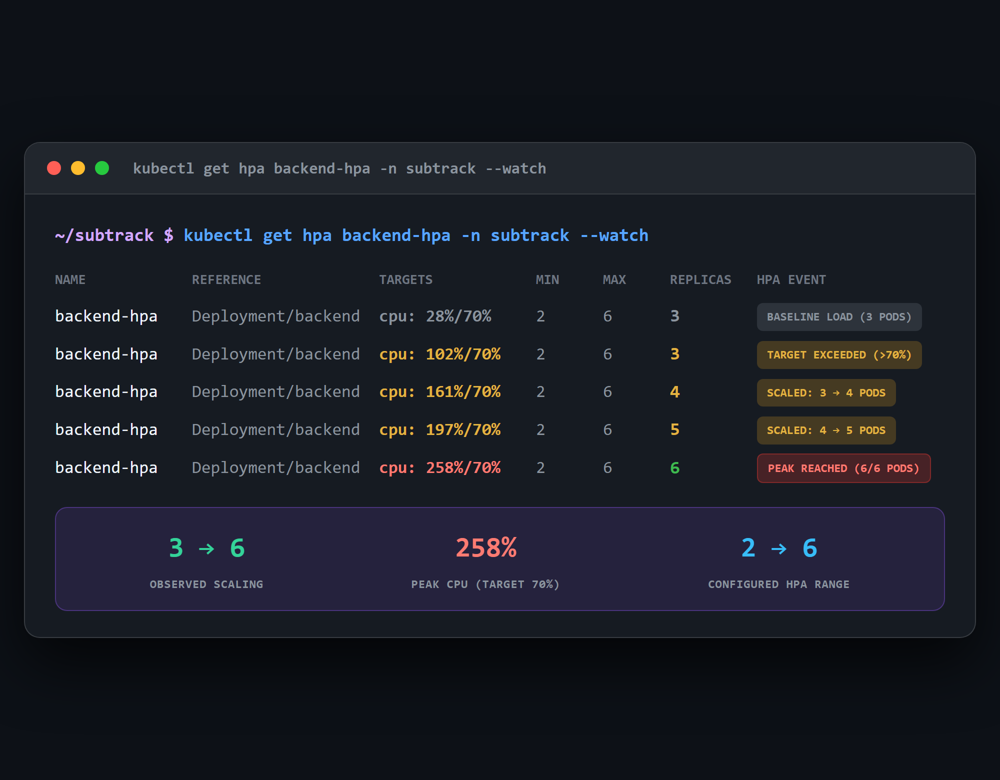

Built and tested on a local Kubernetes (kind) cluster
Swipe →
CI / CD Automation
03 / 09
Every push is built and published automatically
1m 6s Clean Pipeline Run (Run #48)

Workflow Run #48: Triggered on push to main (commit 3bb978d). Builds and pushes Docker images to Docker Hub in 1m 6s.
GitHub Actions • Docker Buildx
Swipe →
Continuous Delivery
04 / 09
Git is the single source of truth
ArgoCD Drift Detection: App Healthy, 15 Resources

Declarative GitOps: ArgoCD continuously reconciles cluster state against Git manifests. OutOfSync status flags local manifest divergence on 2 of 15 resources, ensuring automated drift detection.
ArgoCD • Declarative K8s Manifests
Swipe →
Zero-downtime rollouts
05 / 09
Making Deployments More Reliable
3,989 requests during rollout • 0 failed requests

Zero Failed Requests: 0 HTTP failures out of 3,989 requests during rollout. 17 requests (0.43%) exceeded 500 ms during pod termination and readiness swap. p95 latency: 6.71 ms.
k6 Load Testing • Readiness Probes
Swipe →
Elastic Infrastructure
06 / 09
Scaling with Kubernetes
HPA Autoscale: 3 to 6 Pods (258% Peak CPU)

Autoscaling in Action: Configured HPA (min: 2, max: 6, target: 70% CPU). Under k6 load surge, active replicas scaled from 3 to 6 as CPU utilization reached 258%.
Error Budget Monitoring: Grafana RED dashboard tracking Availability (98.4% consumed in 1d rolling window via chaos testing) and Latency (0% budget consumed).